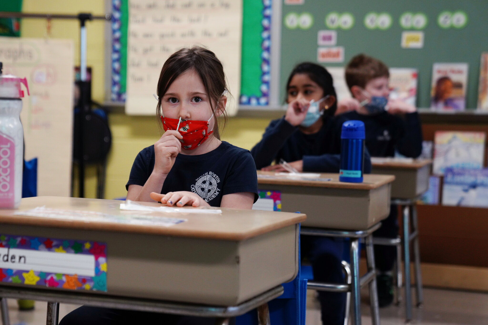
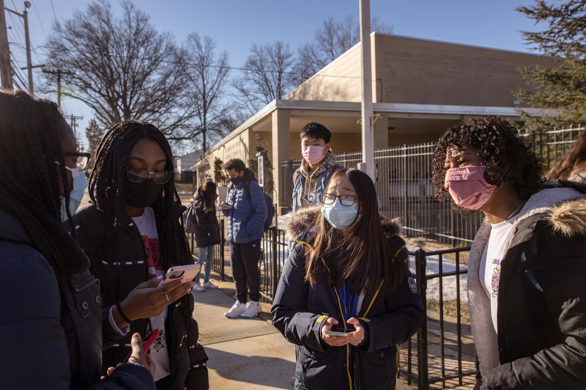

Corona Cases Page
Links:
Coronavirus Cases:
173,216,870
Total deaths:
3,725,001
Total Recoverd:
155,966,299
Covid Live Updates: Vaccines and Testing Bring U.S. Children Closer to Safe Return to School

After a school year rife with debate over the safety of returning to classrooms, experts say that the United States is edging closer to a safe return to in-person learning in the fall.
First, there is continuing good news on the vaccine front. Children ages 12 to 15 recently became eligible to get the Pfizer-BioNTech vaccine in the U.S. and in the European Union, and the vaccine was endorsed by Britain’s drug regulator on Friday to be used for the same age group. Moderna plans this month to ask the Food and Drug Administration to clear its vaccine for use in 12- to 17-year-olds.
For more than a year, parents across the United States have scrambled to adapt to online learning and keep their children focused. (And parents who balanced remote learning with work were the lucky ones. Many others lost their jobs, lacked adequate internet access or stopped work to tend to their families.)
A study published by the Centers for Disease Control and Prevention on Friday indicated that the hospitalization rate for Covid-19 in adolescents was about three times greater than hospitalizations linked to influenza over three recent flu seasons, lending urgency to the drive to vaccinate children. The findings run counter to claims that influenza is more threatening to children than Covid-19 is, an argument that has been used in the push to reopen schools.
“Much of this suffering can be prevented,” the C.D.C. director, Dr. Rochelle P. Walensky, said in a statement. “Vaccination is our way out of this pandemic.”
Until vaccines are authorized for children of all ages, rapid antigen testing might be the best way to limit rare outbreaks of the virus, detect them early and keep schools open consistently.
There are signs that Abbott’s BinaxNOW, a widely available antigen coronavirus test, is highly sensitive in young children with symptoms of Covid-19, according to a small new study. Among children younger than 7, the test detected 100 percent of coronavirus cases, researchers write in a forthcoming paper in the journal Pediatrics.
The study, led by researchers at the Children’s Hospital of Pittsburgh, enrolled 199 children and young adults, ranging from 2 months to 20 years old. All participants had at least one symptom of Covid-19 and had been symptomatic for less than a week.
The Abbott test was somewhat less sensitive in older children, however, and generated a substantial number of false positives in children of all ages. Among children who did not have the virus, 8 to 10 percent tested positive on the antigen test, the researchers found.
“One hundred percent sensitivity in children less than seven years is excellent — outstanding,” said Dr. Alejandro Hoberman, a pediatrician at the Children’s Hospital of Pittsburgh and the senior author of the study. “The problem was the false positives.”
The findings suggest that while the test could help schools and day cares operate more safely, it might be more useful for ruling infections out than at definitively detecting them.
Experts say that more research is needed. “It is important data to have, but we need reinforcing studies that replicate what this study has done with larger numbers of children,” said Dr. Irwin Redlener, a pediatrician and founding director of the National Center for Disaster Preparedness at Columbia University.
Dr. Redlener expects that all children will be eligible to be vaccinated against Covid-19 toward the end of the year or early in 2022.
Dr. Anthony S. Fauci, President Biden’s chief medical adviser for the pandemic, said in an interview with CNN on Thursday that he was “cautiously optimistic” that children younger than 12 would be eligible for vaccinations by Thanksgiving.
Until then, experts are confident that masks, distancing, hand washing, cleaning and ventilation — along with rapid tests — can enable a return to full-time in-person classroom settings.
Mara Aspinall, an expert in biomedical diagnostics at Arizona State University, said that children had become comfortable with tests to the point of administering swabs themselves. “The perception of testing — that it was expensive, it took a long time, it was tickling your brain — none of that is true anymore,” she said. “We’ve made such progress on the technology.”
Having this kind of testing available everywhere, Dr. Redlener said, “should help reassure schools and parents that it’s safe to return to the classroom.”
— Lauren McCarthy, Emily Anthes and Daniel E. Slotnik
Tracking the Coronavirus ›
United States
On Jun. 3 14-day change
New cases 19,497 –48%
New deaths 616 –28%
World
On Jun. 3 14-day change
484,197 –20%
9,870 –14%
Covid hospitalizations are rare among children, but still more frequent than for flu, the C.D.C. says

The number of hospitalizations related to Covid-19 among adolescents in the United States was about three times greater than hospitalizations linked to influenza over three recent flu seasons, according to a study published by the Centers for Disease Control and Prevention on Friday.
The findings run counter to claims that influenza is more threatening to children than Covid-19 is, an argument that has been used in the push to reopen schools, and to question the value of vaccinating adolescents against the coronavirus.
“Much of this suffering can be prevented,” the C.D.C. director, Dr. Rochelle P. Walensky, said in a statement. “Vaccination is our way out of this pandemic.”
Children have a much lower risk overall of Covid-19, compared with adults, but their chances of infection and severe illness are thought to increase with age. Since the start of the pandemic, the rate of hospitalizations among children ages 12 to 17 was 12.5 times lower than among adults. But the rate was higher than that seen in children ages 5 to 11, according to the new report.
The researchers tallied Covid-19 hospitalizations among children ages 12 to 17 from March 1, 2020, to April 24, 2021. The data came from Covid-Net, a population-based surveillance system in 14 states, covering about 10 percent of Americans.
The number of adolescents hospitalized for Covid-19 declined in January and February of this year, but rose again in March and April. Between Jan. 1, 2021, and March 31, 2021, 204 adolescents were likely hospitalized primarily for Covid-19. Most of the children had at least one underlying medical condition, such as obesity, asthma or a neurological disorder.
None of the children died, but about one-third were admitted to the intensive care unit, and 5 percent required invasive mechanical ventilation. Roughly two-thirds of the hospitalized adolescents were Black or Hispanic, reflecting the greater risk posed by the virus to these populations.
The researchers compared the numbers for Covid-19 with hospitalizations for flu in the same age group during the 2017-18, 2018-19 and 2019-20 flu seasons. From Oct. 1, 2020, to April 24, 2021, hospitalization rates for Covid-19 among adolescents were 2.5 to 3.0 times higher than for seasonal flu in previous years.
The rate may have increased this spring because of the more contagious variants of the coronavirus in circulation, as well as school reopenings that brought children together indoors, and looser adherence to precautions like wearing masks and social distancing, the researchers said.
The data lend urgency to the drive to get more teenagers vaccinated, said Dr. Walensky, who added that she was “deeply concerned” by the numbers.